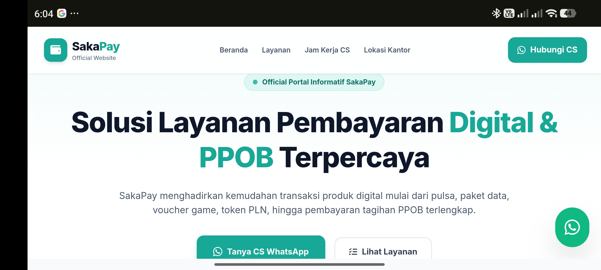
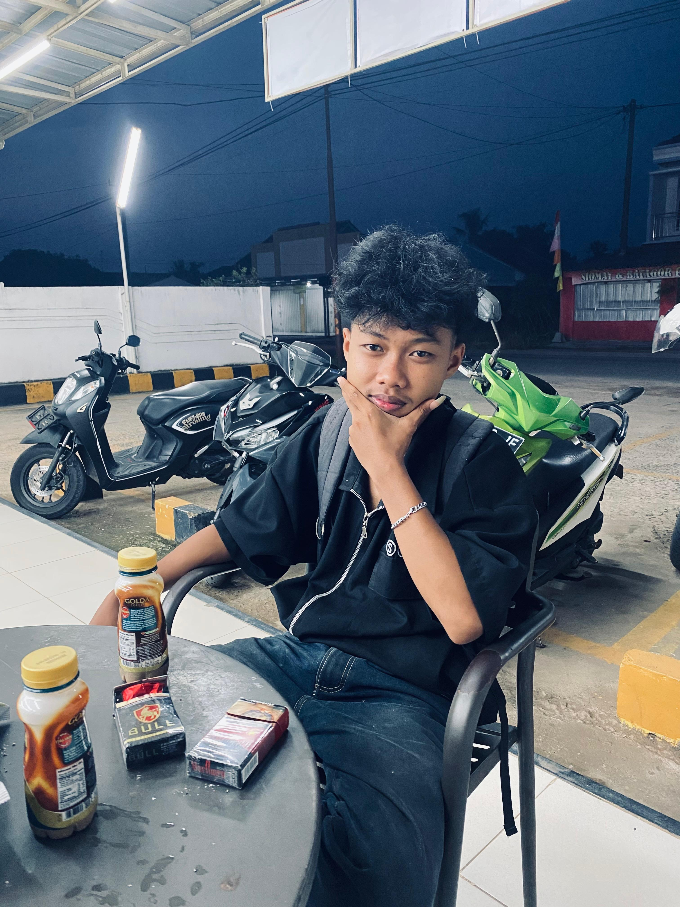
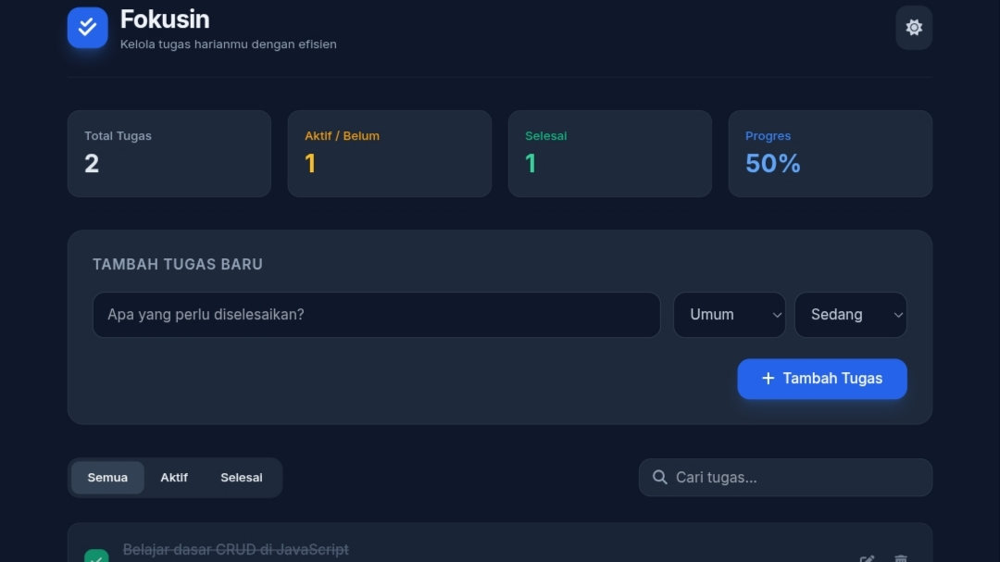

Website
Website Bisnis
Landing page sederhana untuk memperkenalkan layanan atau produk.
HTMLTailwind
Lihat proyek WELCOME TO MY PORTOFOLIO
Saya lulusan SMK jurusan Teknik Komputer dan Jaringan yang sedang mengembangkan keterampilan di bidang web development. Saya tertarik membangun website yang responsif, modern, dan mudah digunakan.

Tentang Saya
Saya senang mempelajari teknologi web dan membuat tampilan digital yang rapi serta nyaman digunakan.
Frontend development dan desain website.
SMKN 01 TULANG BAWANG TENGAH Jurusan TKJ.
Tubaba, Lampung
tegarsakti118@gmail.com
Keahlian
Teknologi yang biasa saya gunakan untuk mengembangkan website modern.
Proyek Pilihan
beberapa karya yang saya buat sambil terus belajar dan berlatih.

Website
Landing page sederhana untuk memperkenalkan layanan atau produk.

WebApp
Fokusin adalah aplikasi web manajemen tugas harian interaktif yang dirancang responsif di semua perangkat untuk mengoptimalkan produktivitas pengguna.
Pengalaman
2025 – Sekarang
Mempelajari dasar HTML, CSS, JavaScript, desain responsif, dan membangun proyek latihan.
28 April - 28 Agustus 2025
Saya melaksanakan PKL di PT Oreo Smart Access dengan pengalaman dalam konfigurasi dan monitoring jaringan, troubleshooting jaringan, serta pendataan barang dan perangkat IT.
CONTACT
Punya ide website atau ingin berkolaborasi? Kirim pesan melalui kontak di bawah ini.